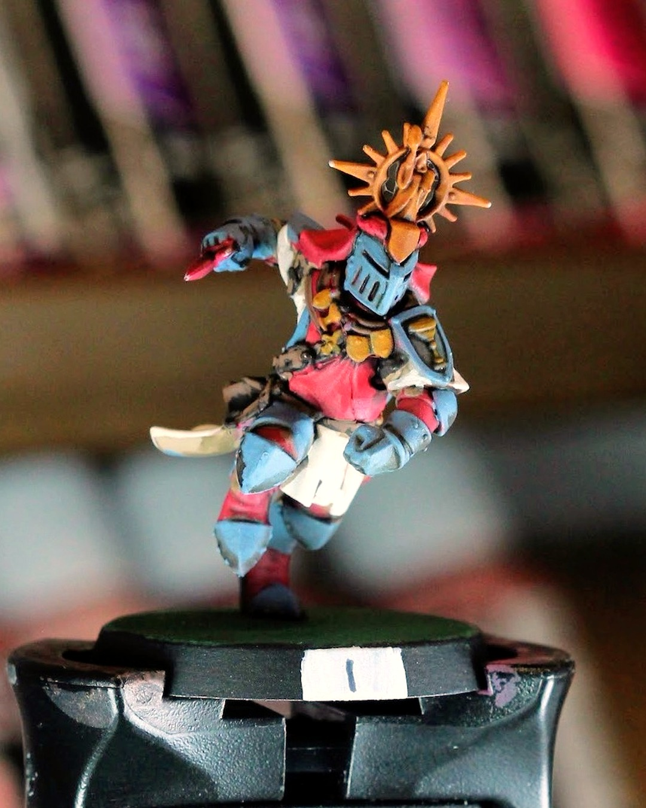
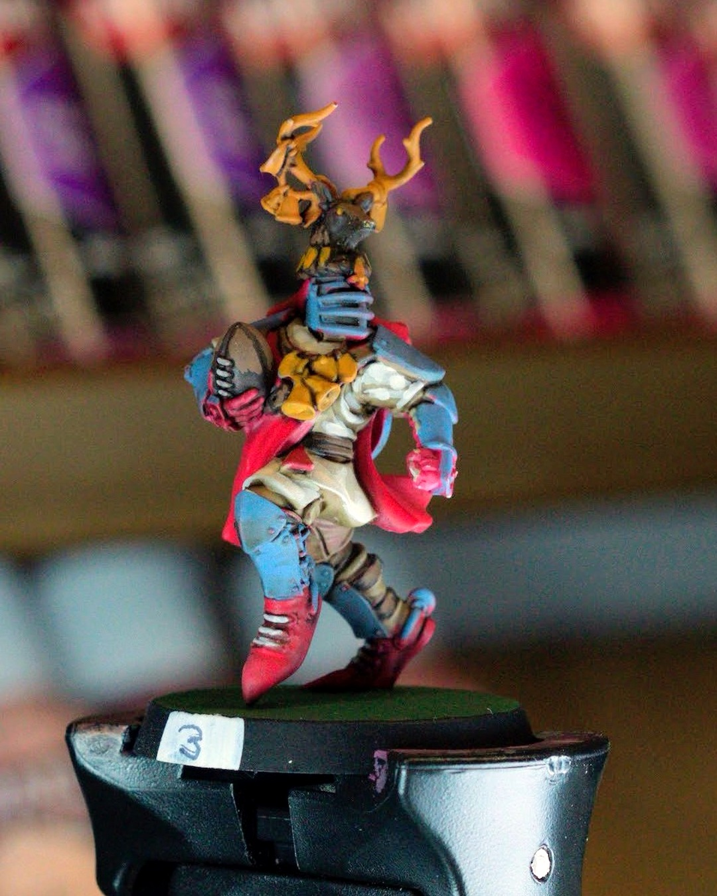
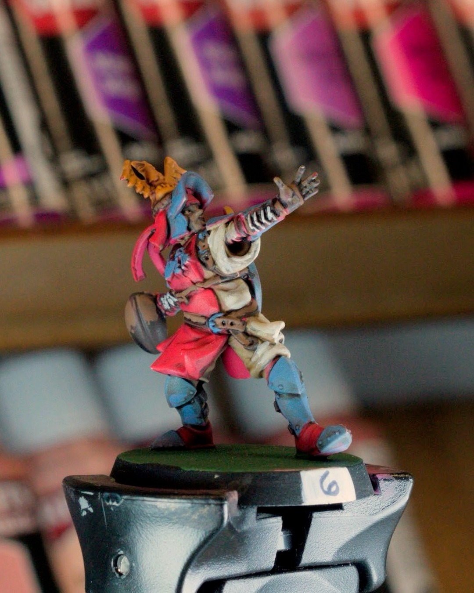
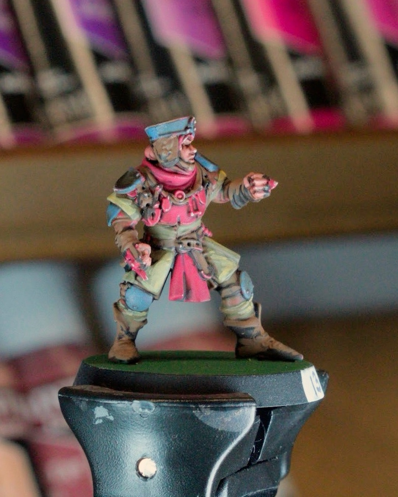
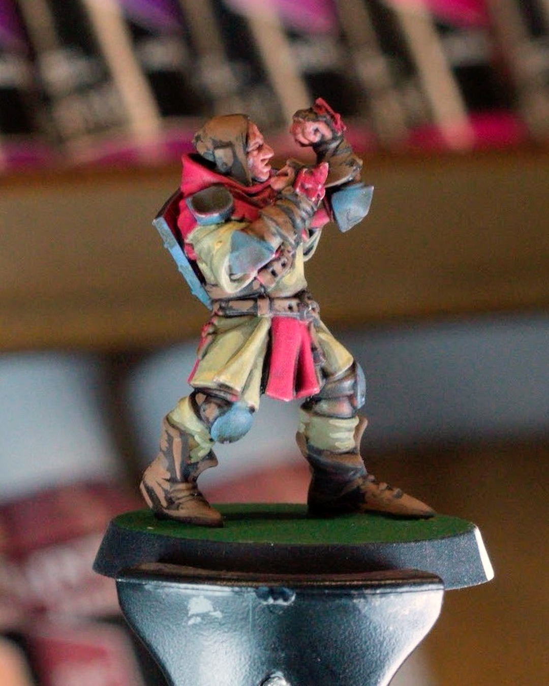

Blood Bowl Nov 8, 2026
Whites and tans on the Grenadiers
Gold halos, antler crests, and a lot more highlights than last time. 🦌
Another night on the Holy Hand Grenadiers. The knights' whites are finally reading white, and the squires' ochres pushed up to the tan I was going for. One player at a time on the handle this round, so you can actually see the edges.
Next up: detailing and metallics. Then the bases still need finishing.
@warhammerofficial
#miniaturepainting #bloodbowl #bretonnian #warhammercommunity #wip